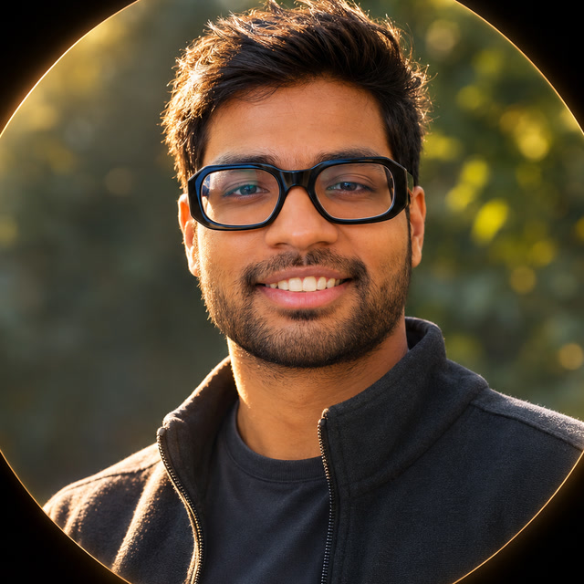
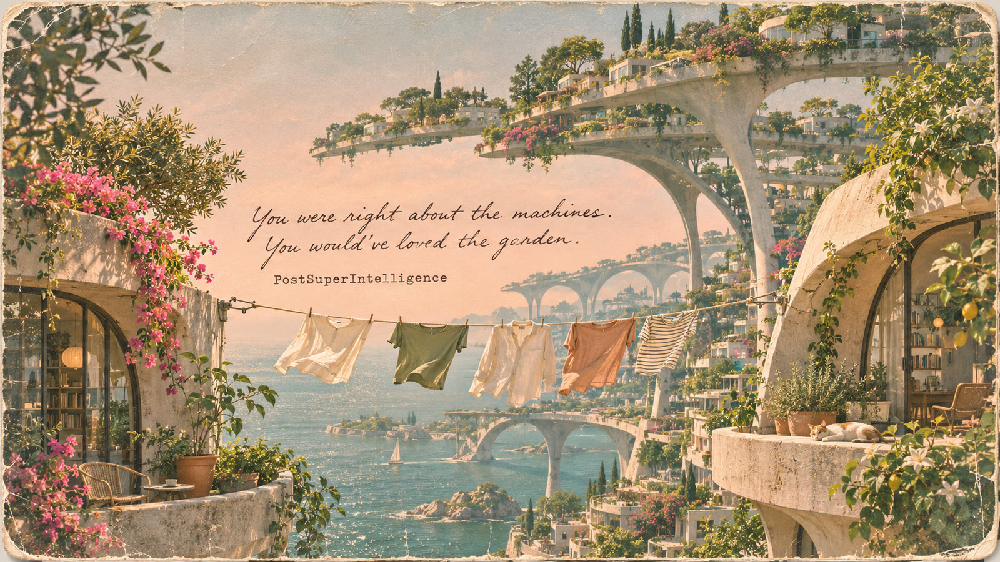

Pavan Kalyan
PK · San Francisco & Bengaluru
I’m co-founder and CEO of TensorTest (YC W26), where we build training data, RL environments, and evaluations for real-world AI work. Nirmit, Gunin, and I started it after winning a hackathon in Bengaluru and quitting our jobs inside a month with no backup plan.
Before that, I was a Research Fellow at Microsoft Research working on how language models learn continuously like children, and spent five years at IIT Bombay teaching speech models to tell stories in character voices. Outside work, I make videos on PostSuperIntelligence with a tiny desk robot, lift, paint in oils, and very slowly learn the violin.

Previously
- 2025–now Co-founder & CEO, TensorTest (formerly Ritivel · YC W26)
- 2024–25 Research Fellow, Microsoft Research India — continual & developmental learning
- 2023–24 Speech Scientist Intern, AppTek (Aachen, Germany)
- 2019–24 B.Tech (EE) + M.Tech (AI), IIT Bombay · Cargill Global Scholar (1 of 10 in India)
Selected papers & studies
- Timeline-Bench: Evaluating agents on real video-editing jobs 2026
- CharacterBench: Frontier models sculpting 3D characters in Blender 2026
- CurLL: Developmental continual learning in language models ACL BabyLM 2025
- WikiDO: Out-of-distribution cross-modal retrieval NeurIPS 2024
- PUB: Pragmatics understanding benchmark for LLMs ACL Findings 2024
- Emotion Arithmetic: Emotional speech via weight interpolation Interspeech 2024
- STORiCo & Narrator or Character — storytelling voices in TTS EACL ’24 · Interspeech ’23